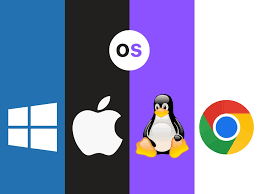

Un sistema operativo (SO) es el software principal que gestiona el hardware y los recursos de una computadora.
Actúa como intermediario entre el usuario y el hardware, permitiendo que otros programas funcionen correctamente y facilitando la interacción con el equipo.
El sistema operativo se encarga de tareas fundamentales como:
La gestión de archivos, memoria y procesos.
El control de dispositivos de entrada y salida (teclado, pantalla, impresora, etc.).
La seguridad del sistema y el manejo de errores.
La interfaz de usuario, ya sea gráfica (GUI) o por línea de comandos (CLI).

¿Qué es un Sistema Operativo?
Un Sistema Operativo (SO) es un conjunto de programas que gestionan el hardware de una computadora y permiten que el usuario interactúe con ella.
Es como el "intermediario" entre el usuario y la máquina.
Administra recursos como la memoria, el procesador, los dispositivos de entrada/salida (teclado, mouse, impresora, etc.).
Permite ejecutar programas y aplicaciones.
Ofrece una interfaz para que el usuario pueda comunicarse con la computadora (por ejemplo, Windows con sus ventanas y menús).